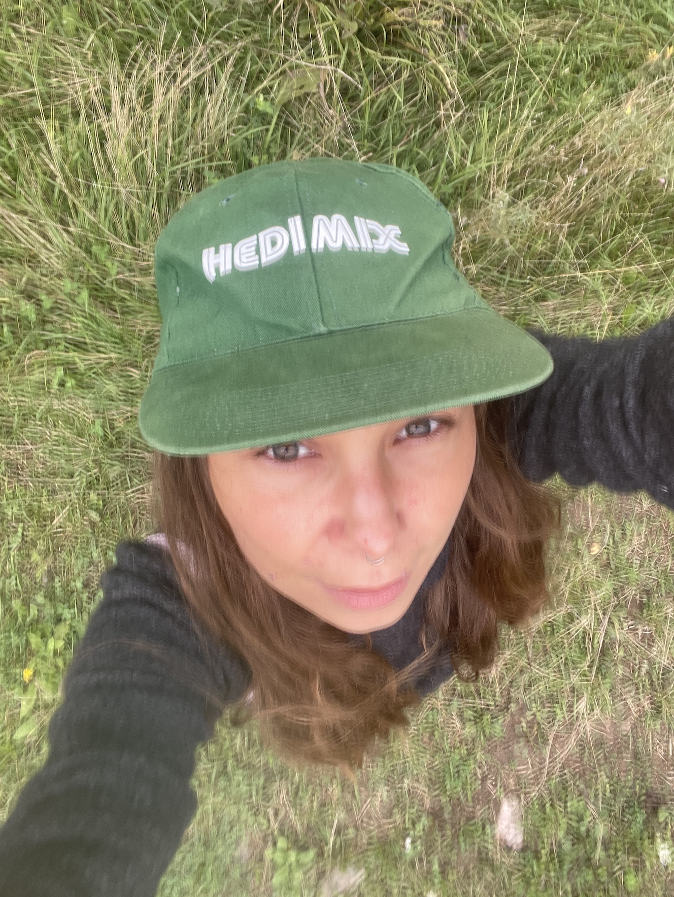
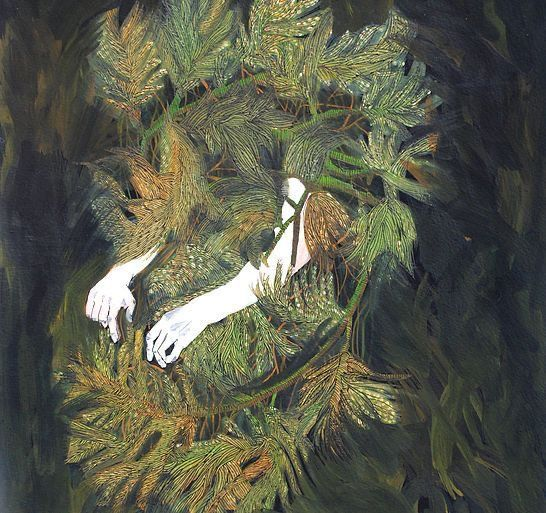
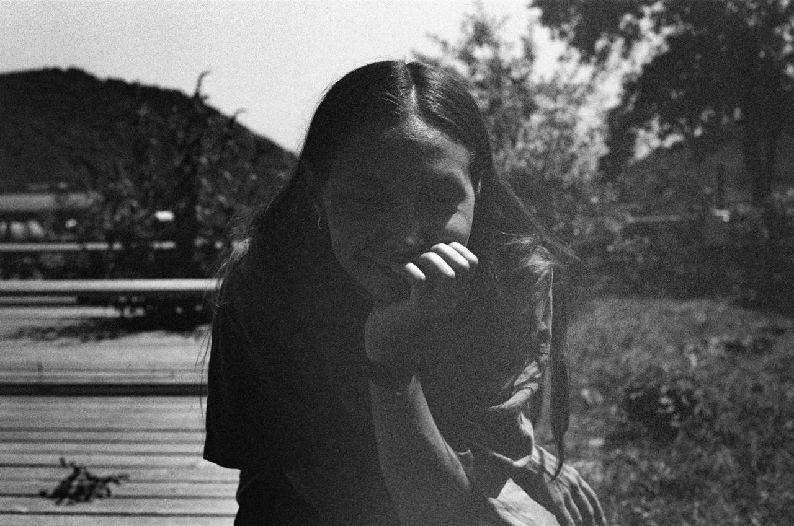

василиса
делает арт
метанавыки
созидательной жизни

хочу позвать вас в компанию, которой мне самой очень хочется:
горизонтальное пространство
женщин, которые что-то создают
делиться событиями внутренней жизни, находками и откровениями.
обсуждать, как у кого что работает.
приносить то, что ещё не оформилось и чему пока нет слов.
слушать, смотреть,
щупать, всякое
calling — интригующая
меня штука.
я не то чтобы в ней разобралась сама, но уже довольно неплохо ориентируюсь в том, как дешифровать непонятно понятное.
хочу научиться лучше это артикулировать и помочь другим то же самое делать.
потому что дары велики и соблазнительны.
хочется исследовать,
как оставаться устойчивой
в контакте с этим зовом.
ключевой навык здесь для меня — интуиция.
хороший контакт с собой, в том числе с непонятным внутри себя.
втч с чужаком внутри себя, который не очень понятен, но довольно [иногда — слишком] настойчив.

я хочу сосредоточиться на
создании искусства и артефактов в широком смысле
— давать вам инструменты контакта с собой и при этом в поиске того, что вы хотите сделать и создать сами.
питать дикую душу и осмыслять свой опыт через искусство.
ходить по тёмному лесу, собирать камни и кусочки своих пазлов. пробовать придавать им форму.
главный ориентир
для меня — честность.
вы в какую-то часть себя смогли честно посмотреть и увидеть красоту в этом.
пиздец,
там красиво.
наверное, это главная причина для меня вас туда приглашать.
про эксперимент
и время
для меня это эксперимент. пусть это будет первый сезон, первый цикл, в котором, мне кажется, что-то может получиться.
я верю в такую игру вдолгую.
мне кажется, 12 недель — достаточное время, чтобы что-то произошло и появились какие-то новые привычки, которые потом можно унести с собой.
по моему опыту, примерно столько нужно, чтобы и вкатиться, и откатиться, и уйти в себя, и вернуться, погрустить, порадоваться — и всё сразу.
чтобы эти практики, эти настройки случились в разных моментах жизни.
12 недель,
начинаем 9 ноября.
∗ по понедельникам — небольшая настройка, предложение или практика, которую можно пробовать в течение недели.
∗ в конце недели — общий созвон: поделиться впечатлениями, находками, вопросами и тем, что создаём [записи будут].
∗ перед началом я встречусь с каждой участницей на звонок-коммит на 30 минут, в том числе из этого будет строиться маршрут сезона, хочу познакомиться заново и понять, где кто сейчас в своём путешествии.
∗ небольшая группа. камерность важна для меня.
я задаю ритм, предлагаю практики и делюсь своим опытом.
пространство будем создавать вместе.
мне важно, чтобы нам было любопытно —
и чтобы мы сами себе были любопытны в процессе.

про василису
и меня
«часть себя я точно идентифицирую с василисой. я не чувствую, что до конца прошла собственную инициацию. и при этом чувствую, что в процессе уже обрела достаточно навыков устойчивости.
я ещё не знаю, кем буду, когда вырасту, и меня это больше не останавливает. мне есть что сказать по этому поводу, и моя идентификация с этой чудесной героиней неспроста»
«я восхищаюсь её устойчивостью. и при этом есть вот этот вайб, когда справляться уже не хочется — хочется, чтобы классно всё было.
за мной есть какой-то опыт, какое-то прошлое, эта усталость. и при этом — большая широта и глубина, желание создавать классное в мире, быть частью мира. хочется сосредоточиться на этом»
я свой опыт не игнорирую,
но я и не в заложницах у него.
встретимся
9 ноября
6 000 ₽ / месяц
можно присоединиться на месяц и посмотреть, как вам в этом пространстве.
12 000 ₽ / 12 недель
при оплате сразу получается один месяц в подарок.
к вашему недоверию я отношусь с большим доверием тоже.
если есть какие-то вопросы и сомнения, пишите.
p.s. это первый мой групповой проект почти за два года. соскучилась.